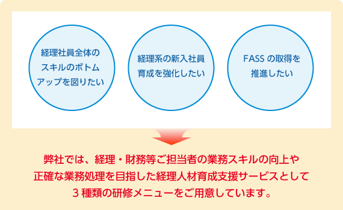
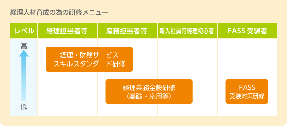

経理・財務等の業務スキル向上を目指した実務に役立つ研修をご用意しています。
経理業務の全体像を短期間で把握したい方、経理業務の経験が短い方


サービスの詳細
経理業務全般研修（基礎・応用等）
基礎編
新入社員等の経理初心者向けオリエンテーションとして、経理業務の役割・意義、会計原則、日常取引における業務の流れ、記帳と仕訳、決算といった概略を解説いたします。経理に関する基礎知識の習得により企業の広い業務分野での活躍の土台づくりを行うことをご支援いたします。
応用編
日常的な経理処理を行う事業部門の総務・庶務ご担当者向けに、日常取引の記録の重要性、収益・費用の認識のタイミング、資本的支出と修繕費の判定、交際費の扱いなど正確な会計処理のためのポイント、誤りやすい処理事例など円滑な経費処理に必要な実践的知識の習得をご支援いたします。
経理・財務サービス スキルスタンダード研修
経理ご担当者向けに、経済産業省の「経理・財務サービス スキルスタンダード」の経理・財務業務項目ごとの業務内容を実務上の留意点を織り交ぜて解説いたします。それぞれの担当業務範囲だけに視野が狭まりがちな経理ご担当者の経理・財務業務全般にわたる実務スキルをブラッシュアップし、より広い視野からの業務改善提案力と判断力の強化をご支援いたします。
FASS受験対策研修
経理経験の浅いご担当者向けに、経理・財務スキル検定「FASS」＊1の４分野（資産・決算・税務・資金）のポイントをコンパクトに解説し、実際のFASSの出題形式に則った演習を行います。
本研修を受講することにより、受験者の皆様がより効率的に、また包括的に経理・財務業務を学習することができるとともに、知識の棚卸しにも寄与いたします。主たる対象としてはＣレベル＊2の獲得を目指す方々を中心に構成しております。
なお、FASS検定という実務スキルの習得や理解度の測定の場を持つことにより、社員の皆様のスキルアップに向けたモチベーションアップも期待できます。
＊1 経済産業省の平成16年度高度専門人材育成事業「経理・財務サービス スキルスタンダード普及促進モデル事業」で実証された経理・財務実務のスキルを客観的に測定するための試験
＊2 経理・財務分野について、日常の業務を行うための基本的なスキルが身についているが、自己の経験以外の業務への対応力について差が見られる。日常の業務であれば、業務を理解して、支障なく対応できるスキルをもっている。（FASS検定561点～640点/800点）
FASS認定テキストの購入について
FASS認定テキストの購入をご希望の方は下記ボタンよりお申し込みください。


NTTビジネスアソシエが提供する経理サービスの3つの特長

NTTグループの経理シェアードサービスセンターとして培った、経理実務から業務運営に至るまでの豊富なノウハウと膨大なナレッジに基づいたサービスをご提供いたします。

NTTグループをはじめ、数多くのグループ内外のお客さまから経理業務を受託してきた豊富な業務実績に基づいたサービスをご提供いたします。

経理実務経験の豊富な充実した業務スタッフが対応いたします。